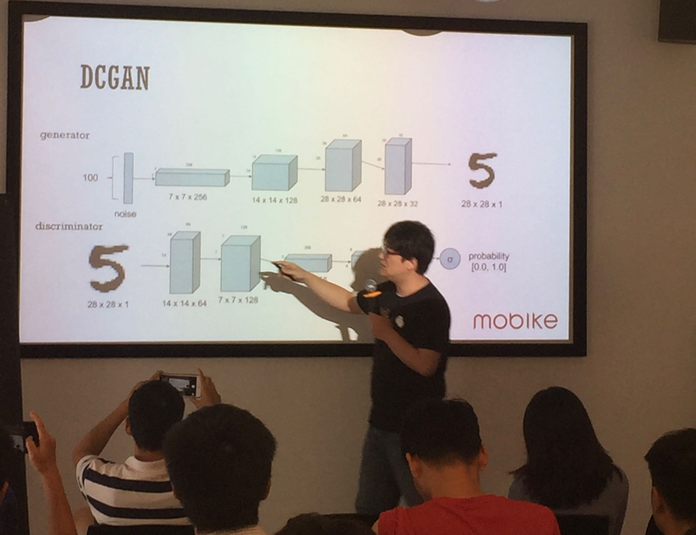
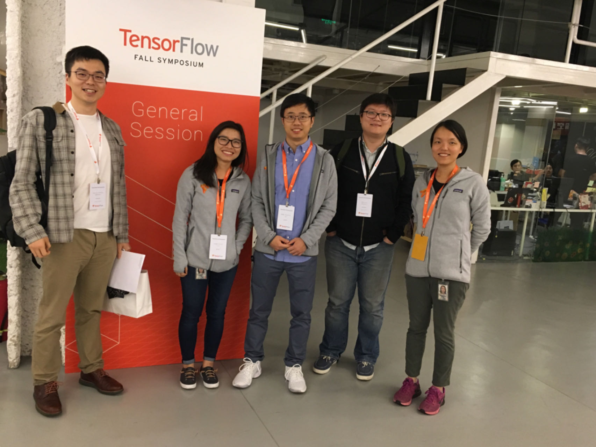
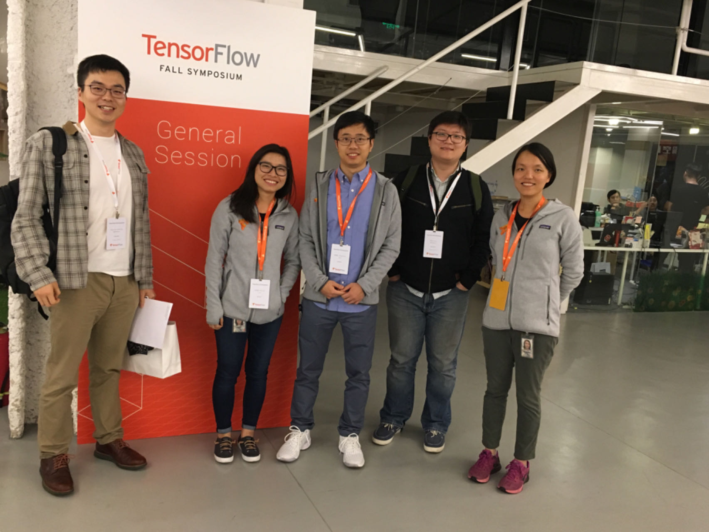
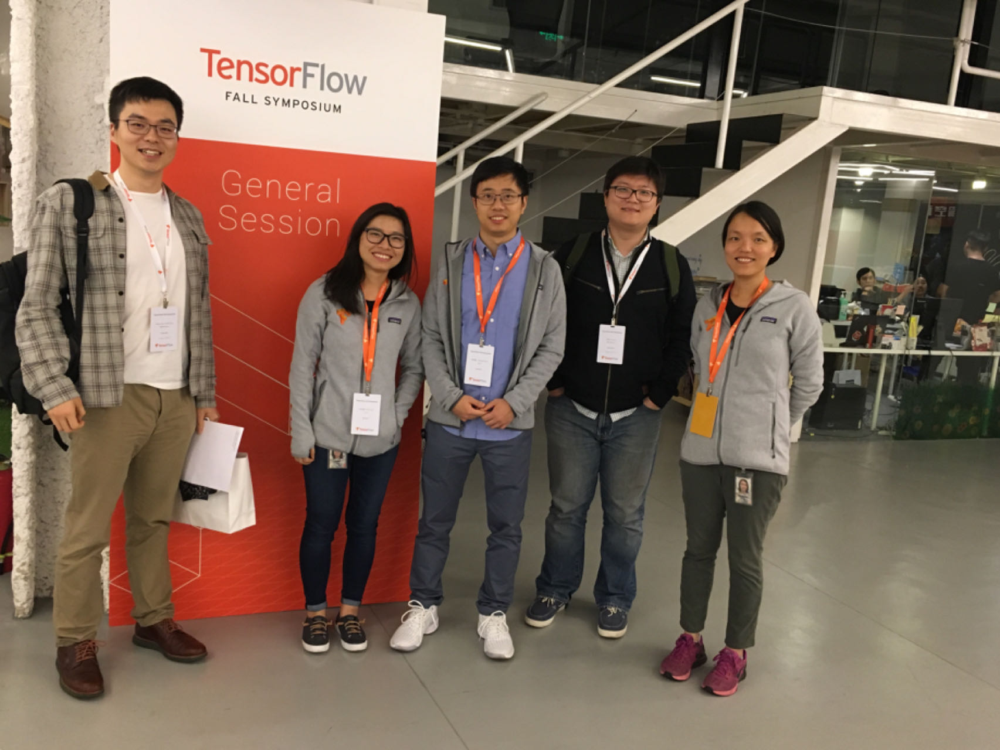

About
I am always curious about the universe and the future of humanity. Alongside my work in Artificial Intelligence, I often find myself contemplating the potential paths that lie ahead for mankind. In addition to my passion for AI, I am particularly intrigued by the intersection of AI Economics and Quantum Computing, and how advancements in these fields will revolutionize our world.
Contact
Work Experience
-
Roblox
Machine Learning Engineering Manager
November 2020 – April 2022
- Established and led the Roblox China machine learning team, growing the team from 3 to 11 members.
- Focused on AI content moderation system, and intelligent public sentiment analysis platform.
- Built the AI content moderation system from scratch, which now moderates over 20 million games and 7 billion user-generated contents, including audio, voice, player chat, and 3D objects, supporting an average of 60 million online users daily.
- Our chat moderation achieves precision of 93 and an F1 score of 85 on test set, providing a safe entertainment environment for children players worldwide.
- Technical Highlights:
- Sensitive Text Filtering: 1) Replaced Bert-large model with Distil-Bert, improving inference speed by two times. 2) Cached over 1 million token ids, reducing model service traffic by 40%. 3) Replaced V100 GPU with 36-core Xeon CPU, reducing inference cost to 1/6 of the previous cost. 4) Applied int8 quantization during inference. 5) Reduced the number of tokens to 128 without affecting evaluation metrics, improved overall inference speed by 30 times. 6) Introduced class weights into the loss function to eliminate the impact of class imbalance.
- Sensitive Object Detection: 1) Fine-tuned DETR-RESNET101, achieving an F1 score of 80+ on the test set. 2) Converted 3D model obj files to point cloud files using obj2pcd and performed sensitive object detection using point-GNN.
- Technology Stack: AWS, Tencent Cloud, PyTorch, TensorFlow, Docker, K8S, Kubeflow, Kafka, MySQL, Selenium
- Models: Distilled BERT, BERT LARGE, DETR, InsightFace, GNN
-
WeWork
Senior Data Scientist
August 2019 – May 2020
- Developed an intelligent inventory search system for WeWork China's sales team, generating office inventory combinations based on customer leasing requirements and geographical location.
- Built a geographic information system to support intelligent inventory search.
- Responsible for algorithm and backend service development for WeWork China's recommendation system, delivering relevant information to users based on their profiles and behavior data.
- Led the analysis project for office opening/closing locations, identified the main factors and their impact coefficients on office location profitability, provided algorithmic and data support for closing unprofitable office locations, contributing to WeWork China's turnaround from loss to profit.
- Technical Highlights:
- Geographic Information System: 1) Collected and stored POI data around all WeWork offices, verified using Alibaba’s amap and Baidu Maps APIs. 2) Stored data in MongoDB, deployed the geographic information system service using WeK8S, serving as an important data source for the intelligent inventory search system.
- Technology Stack: Docker, K8S, Kafka, Redis, MongoDB, PySpark, Julia, Flask
-
Oracle
Senior AI Engineer
September 2018 – August 2019
- Led the development of Oracle's second-generation conversational interface, integrated as an add-on component in Oracle's NetSuite, and provided services to clients such as the Asian Development Bank and Johnson & Johnson.
- Replaced the old document search engine with the conversational interface, allowing users to ask questions related to any internal document and receive ranked relevant paragraphs and the most likely answers with similarity scores.
- Technical Highlights:
- Conversational AI: 1) Semantic Text Search: Converted the text of each paragraph in all documents into corresponding vectors using BiGram-Hashed-TFIDF and calculated the similarity between the user's question and each paragraph using cosine similarity. Ranked the paragraphs based on similarity scores. 2) Answer Extraction based on User Question: Converted the user input into Glove embeddings, inputted them into three layers of bidirectional LSTM along with the top-n paragraphs with the highest similarity scores and extracted possible answers from the paragraphs. Returned the corresponding article, paragraph, and extracted answer if the similarity score exceeded a threshold.
- Technology Stack: Docker, K8S, TensorFlow, MySQL, Flask
- Models: DRQA, Bi-Gram-Hashed-TFIDF, Bi-Directional-LSTM, Glove
-
Meituan
AI Team Engineering Manager
March 2017 – January 2018
- Experienced rapid growth in both business and technology aspects, scaling the team from 2 to 13 members.
- Successfully launched large-scale projects including the red envelope dispatch system, Mola operations team scheduling system, Poseidon anti-fraud system, user growth, and dynamic pricing.
- Developed a real-time dispatch system that intelligently dispatches over 8 million bicycles to match 30 million orders daily in real-time.
- Technical Highlights:
- Red Packet Dispatch System: 1) Used PySpark to calculate the hourly inflow/outflow data for each 100x100-meter grid. 2) Used 3D-CNN to predict the inflow/outflow/net inflow data for each grid for the next 24 hours. 3) Integrated weather data into the prediction by retrieving hourly weather data for each grid from an API. 4) Established congestion point fences for each hour of each day of the week based on DBSCAN and the coordinates of subway/bus stations and shopping malls. 5) Used Spark to access real-time data from Kafka and used GBRT, LR, and 3D-CNN in an ensemble to predict the inflow/outflow/net inflow data for the next hour. 6) Dispatched red envelopes with values ranging from 0 to 9 yuan, following a Bernoulli distribution with a mean of 1, to the points with a high negative net inflow score from the congestion point fences, maximizing the return on investment.
- Red Packet Anti-Fraud System: 1) Implemented a two-layer system consisting of rule-based SQL queries and a real-time API based on random forest. 2) Analyzed user persona and behavior data, such as IMEA and lock/unlock frequency, to detect fraud in real-time. 3) Conducted offline data analysis for anomaly detection.
- Technology Stack: Docker, K8S, TensorFlow, MySQL, Flask, Hive, HBase, Hadoop
- Models: 3D-CNN, DBSCAN, GBRT, RF, SVM, LDA
-
China Electronics Technology Group Corporation (CETC)
Machine Learning Engineer
September 2015 – March 2017
- Worked on sensitive object detection and anomaly detection projects for large state-owned enterprises.
- Technology Stack: Docker, TensorFlow, MySQL, Kafka, Flask
- Models: YOLO, Multi-Variant-Gaussian
Education
-
Master of Arts: Applied Leadership and Management
GPA: 3.6
Arizona State University
March 2021 - October 2023
-
Master of Science: Computational Science and Engineering
GPA: 4.0; Full Scholarship Recipient
North Carolina A&T State University
August 2013 - May 2015
-
Bachelor of Arts: Mathematics
Minor: Economics
University of North Carolina
August 2009 - August 2013
Publications
- Yang Lu, Xing Fang, Justin Zhan, "Data Readiness Level for Unstructured Data With Focus On Unindexed Data", International Conference On Big Data Science And Computing, Aug 2014, ACM New York, NY, USA
- Yang Lu, Xing Fang, Justin Zhan, "Towards Data Readiness Level for Structured Data", BigDataScience 14, Stanford, CA, USA
Under Review
- Lu, Y., Cranfield, S., Savarimuthu, BTR. (2023). Multimodal Non-Normative Behavior Detection: Constructed by Textual Posts, Generalized with Zero-shot Learning for Non-Normative Image Posts.
2017

 

